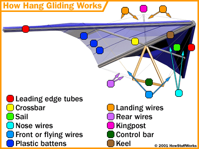
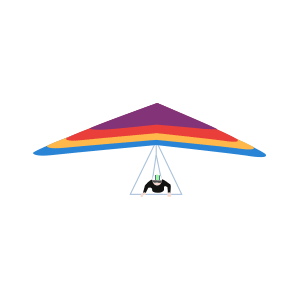

Let's start with a few important parts of a hang glider!
To hang glide, you need have something to create a lift off. Most people start from some place high, like hills! But you can also be lifted on flat ground through something called winches.
If starting from a hill, we will have to run to gain speed. Remember to hold on tight!
Now, the next big question.
To move left and right, we will need to shift our weight. Lean towards the left and we will move left. Lean towards the right and we will move right.
To move forward and backward, we will have to move the control bar. By pulling the bar towards us, we can move backwards. By pushing the bar away from us, we can move forward.